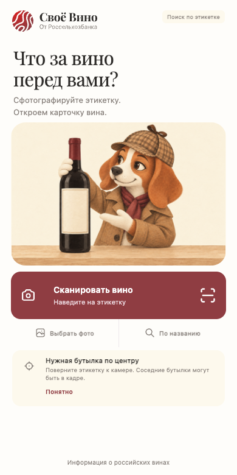
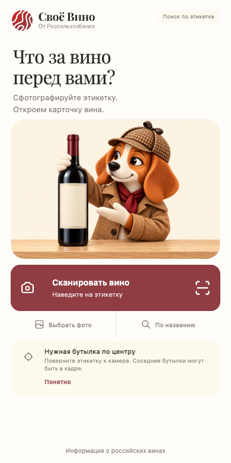
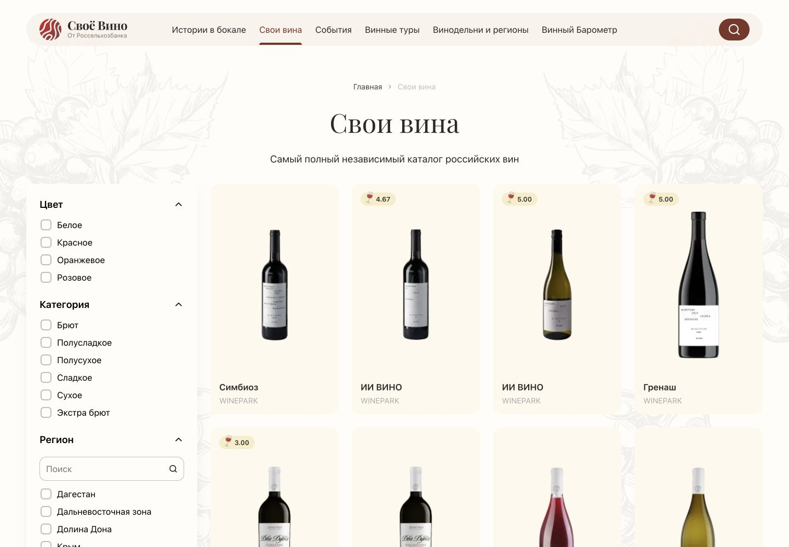
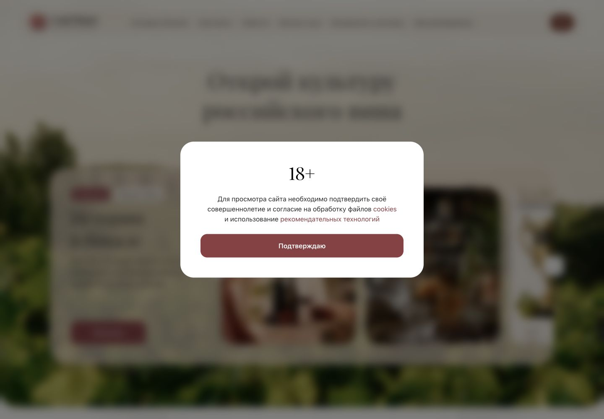

Свои вина
Playfair Display — заголовки. System UI — кнопки, данные и описания.
Итерация 05 · Композиция и стиль
Один пёс, две рисовки и разные роли: показывает этикетку на главной, ищет среди винных полок и помогает продолжить после неудачи.
Не переносим одну позу по всем экранам. Масштаб, место и действие зависят от того, что сейчас делает человек. Камеру и карточку результата оставляем предмету поиска.
Две композиции главной, контроль без героя и обновлённые состояния поиска. Статика: никаких искусственных задержек и анимации ради анимации.
Все новые экраны — демонстрационные макеты. Сгенерированные винные полки и бутылки — декорация, не ассортимент сервиса. Исходное фото и технический статус не заменяются сценкой.
Слева мягкий 2D, справа объёмный 3D. Один размер, один интерфейс и одна роль: показать этикетку. Нажмите на экран, чтобы открыть его крупно.


2D спокойнее сочетается с Playfair и кремовым фоном. 3D сильнее притягивает взгляд, но конкурирует с бутылкой. У 2D ещё можно упростить клетку и текстуру плаща. Это оценка композиции, не доказанное предпочтение пользователей.
Сравните не только картинки, но и сколько места остаётся действию пользователя.
Найдено через поиск изображений и проверено по исходным страницам. Для каждого примера обозначено происхождение; наличие красивого маскота само по себе не доказывает качество UX.
Собрано с vino-svoe.ru 19 сентября 2026. Цвета, шрифты и геометрия проверены по CSS и вычисленным стилям. Выводы о маскоте — наши проектные гипотезы.
Это фрагменты для изучения языка сайта, не скриншоты и не новые функции.
Свои вина
Playfair Display — заголовки. System UI — кнопки, данные и описания.
56 px · радиус 16 px · текст 16/20, 600.
Наведите или нажмите: #AB494F / #723135.
#EFDBC64D + blur(10px), форма капсулы. Приём для навигации, не повод помещать героя в стеклянный бейдж.




На главной пёс показывает этикетку. Стойка даёт обоим общую опору. В результате герой уходит: карточка принадлежит вину.
В переключателе уже есть рисованная версия той же сцены: приглушённые цвета и меньше блеска. На мой взгляд, она ближе к редакционному тону сайта. Это дизайнерская оценка, не результат пользовательского теста. Оставить бигля, шляпу, плащ и бордовый шарф. При следующей отрисовке снизить контраст клетки, детализацию меха и блеск. Не превращать его в плоский значок.
Кремовое поле и мягкие тени связывают силуэт с интерфейсом. Погреб уместен в поиске, но большая тёмная декорация на главной спорит с воздушностью сайта.
Переключатель «Своё Вино» меняет палитру, заголовки, логотип и поверхности новых экранов. Иллюстрации пока композиционные; камера и результат сохранены из текущего макета. Это не утверждённая адаптация бренда.
Для основного сценария — маленькая предметная сцена ожидания. Погреб — выразительная альтернатива при затянувшемся поиске. На главной — бутылка и пёс на общей стойке; мягкий 2D как гипотеза для стилистики бренда.
Бутылка и пёс образуют одну сцену над кнопкой. «Понятно» сворачивает объяснение, оставляя сцену и действия на месте. Повторное открытие доступно через «Как снять этикетку».
Пальцы должны перекрывать край, а нижняя часть головы уходить за поверхность. Просто обрезать PNG недостаточно. Поза спокойная, без обвинения пользователя в неудачном поиске.
Стеллажи дают контекст вина и направление движения. Не пишем «проверили 128 полок» и не рисуем процент, которого сервис не знает. Сцена не должна внушать, что показанные бутылки есть в каталоге.
Пёс ищет среди винных полок: сохраняем предметный контекст и общую сцену с долгим поиском. Не вводим отдельный обязательный экран, если карточка уже готова.
В визире важны этикетка и границы кадра. В результате — найденное вино, данные и источник. Поздравительный экран перед карточкой здесь не нужен.
Один перевод взгляда к снимку; короткий подъём из-за панели; один шаг вдоль полки. Это только возможная раскадровка: сейчас всё статично. Движение отключаемо и никогда не блокирует отмену или результат.
Не выглядит ли сцена слишком детской для винного сервиса? Замечает ли человек отмену? Понимает ли, что поиск идёт, а не завис? Не раздражает ли повторное появление пса? По референсам это определить нельзя — нужны пробы с пользователями.
Добавлены две композиции главной с бутылкой в 3D и мягком 2D; поиск перенесён в погреб. «Понятно» закрывает текст, сохраняя иллюстрацию и действия. Возвращены нижняя подпись и актуальный визир; отмена сохраняет доступ к демонстрационному фото. «Не нашли» оставлено с пометкой о несовпадении стиля. Добавлена коллекция приёмов Своего Вина, чтобы проверять героя в контексте бренда.
Встроенные экраны блокировал серверный X-Frame-Options: DENY. Для /mascots/ разрешено встраивание только с того же домена. Проверка теперь включает содержимое вложенных рамок и декодирование картинок, а не только HTTP-ответы.
Добавлены выглядывание справа, компактная загрузка, поиск среди стеллажей и появление из-за панели. Причина — одной позы с фотографией недостаточно для всего сценария. Намерение — подобрать уместный масштаб и действие для каждого состояния; камера и результат показаны без маскота.
Фото в лапах и планшет на столе остаются отдельной примеркой. Итерация 02 и первые исследования доступны без изменений экранов.